Mathis Pezet — 2025/2026
Vérification que Docker fonctionne :
docker run hello-world
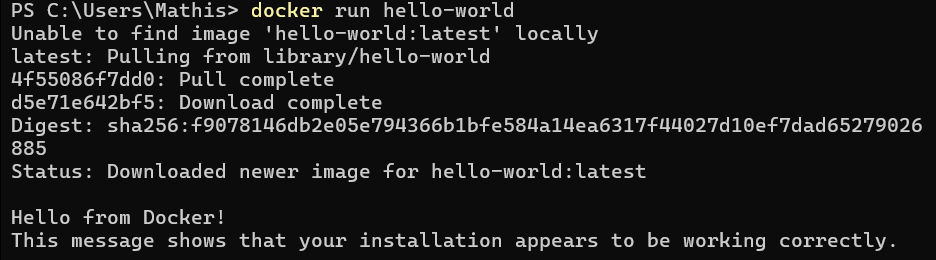
Ajout des entrées DNS dans le fichier hosts (PowerShell admin) :
Add-Content -Path C:\Windows\System32\drivers\etc\hosts -Value "127.0.0.1 portail.tpiam.internal 127.0.0.1 simplesaml.tpiam.internal 127.0.0.1 dockhand.tpiam.internal 127.0.0.1 idp.tpiam.internal 127.0.0.1 mail.tpiam.internal"
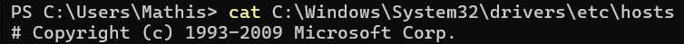
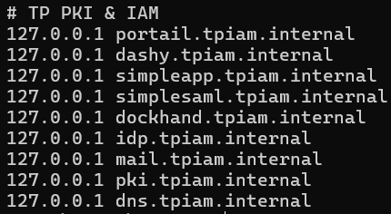
On crée 4 réseaux isolés pour segmenter l'infrastructure :
docker network create --subnet=192.168.101.0/25 NetApp docker network create --subnet=192.168.101.128/25 NetAuth docker network create --subnet=192.168.102.128/25 NetAdmin docker network create --subnet=192.168.102.0/25 NetAccess
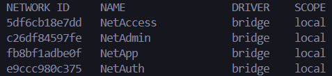
CoreDNS gère la résolution DNS interne pour les conteneurs.
docker compose -f compose\dns\compose.yml up -d
nslookup portail.tpiam.internal 127.0.0.1
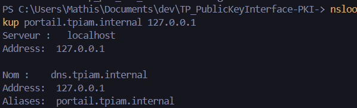
Interface web de gestion Docker (logs, consoles, containers).
docker compose -f compose\dockhand\compose.yml up -d
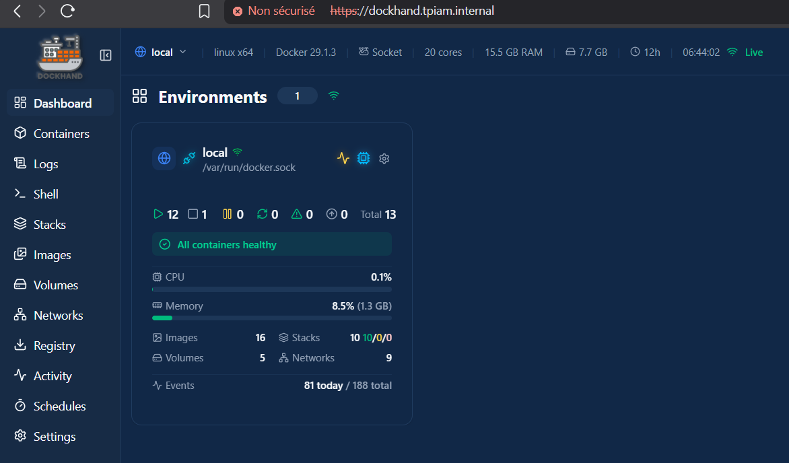
Serveur SMTP piège pour intercepter les emails de Keycloak.
docker compose -f compose\mailhog\compose.yml up -d
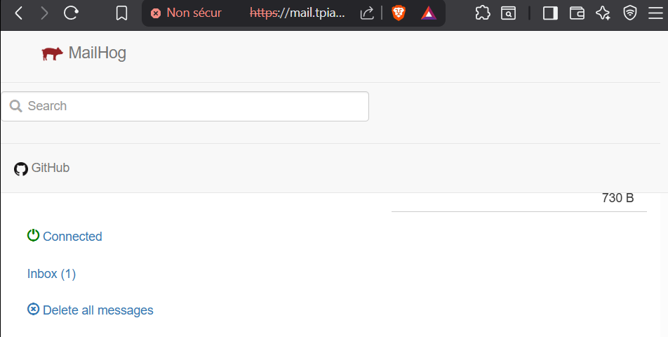
Point d'entrée HTTPS unique. Redirige les requêtes vers le bon service selon le domaine.
docker compose -f compose\caddy\compose.yml up -d
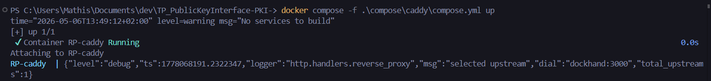
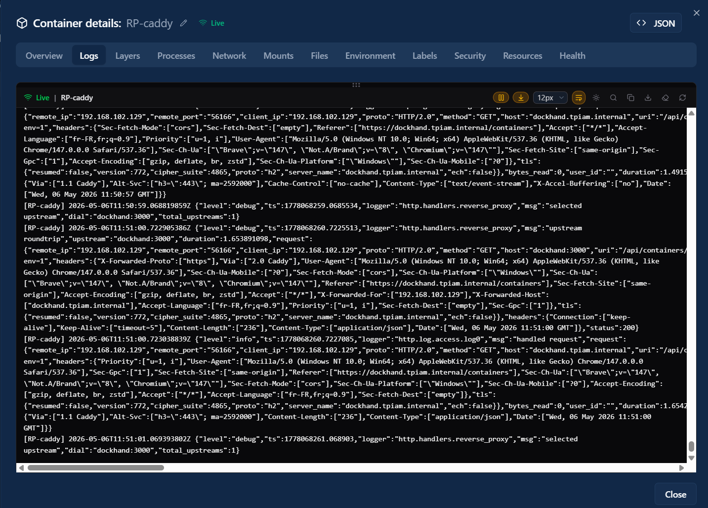
docker compose -f compose\dashy\compose.yml up -d
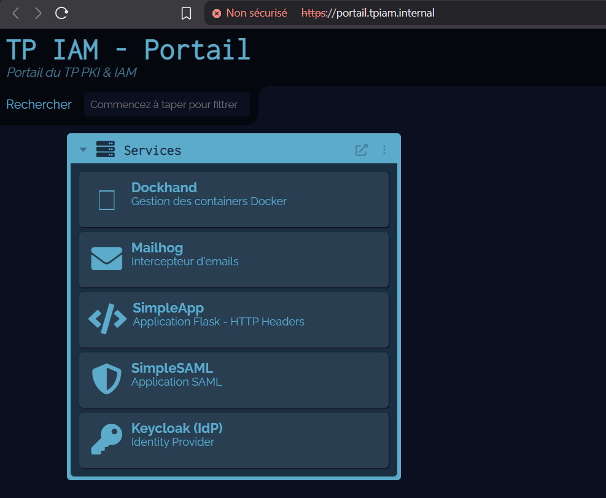
Application Flask qui affiche les headers HTTP reçus.
docker compose -f compose\simpleapp\compose.yml build docker compose -f compose\simpleapp\compose.yml up -d
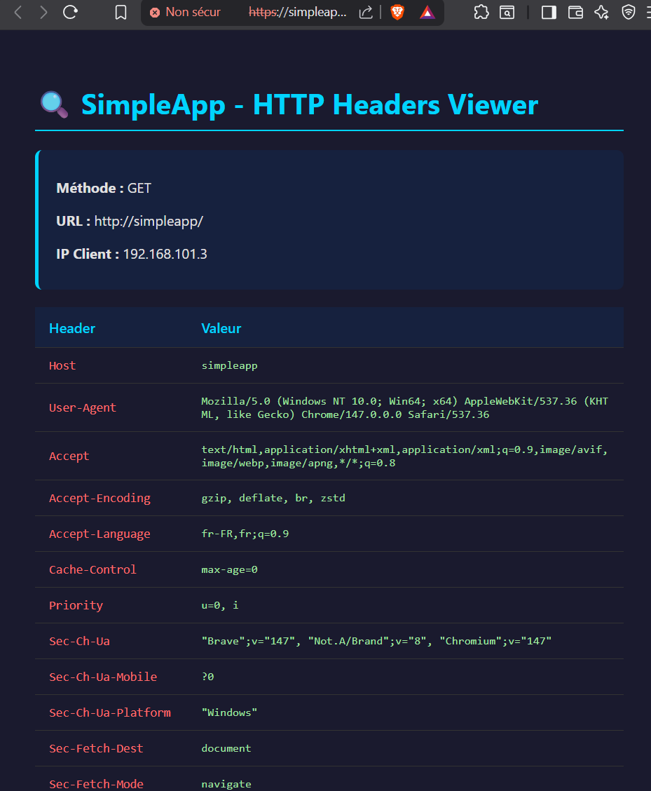
docker compose -f compose\simplesaml\compose.yml up -d
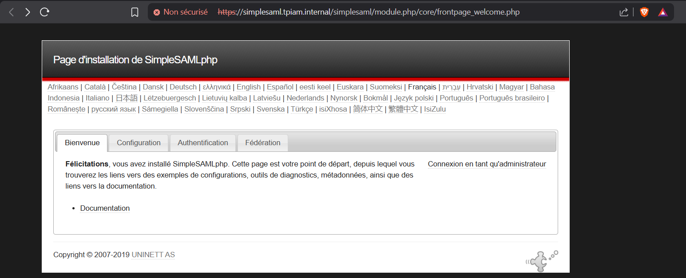
Autorité de Certification privée. Émet les certificats TLS via ACME comme Let's Encrypt.
Premier lancement en mode attaché pour récupérer le mot de passe JWK :
docker compose -f compose\stepca\compose.yml up
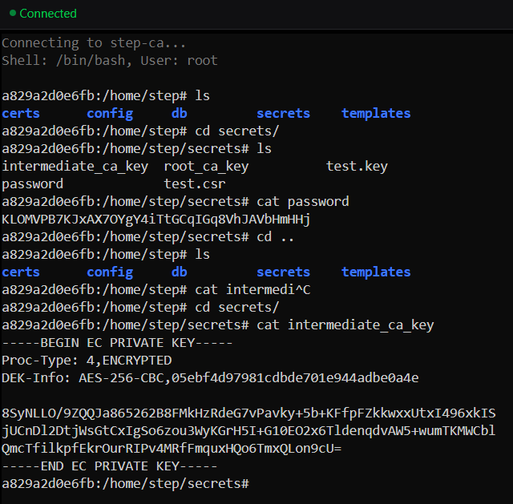
Inspection des certificats depuis la console du container :
step certificate inspect $(step path)/certs/root_ca.crt
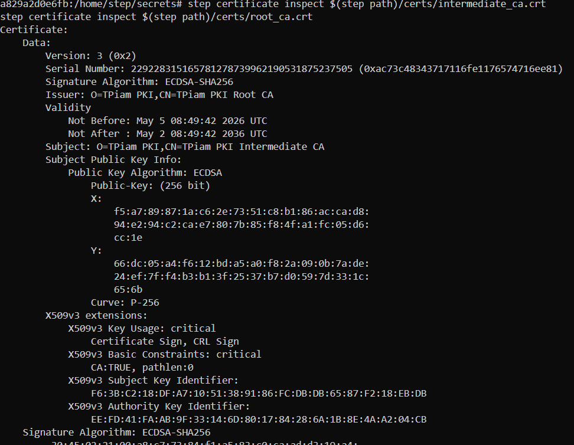
On configure Caddy pour obtenir ses certificats TLS auprès de StepCA via ACME.
Le certificat root de StepCA est monté dans Caddy pour établir la confiance. Le Caddyfile est mis à jour avec le bloc TLS ACME :
tls {
ca https://step-ca:9443/acme/acme/directory
ca_root /etc/caddy/trusted-roots/root-ca.pem
}
docker compose -f compose\caddy\compose.yml up -d --force-recreate
Importation des certificats dans le navigateur via le Caddyfile
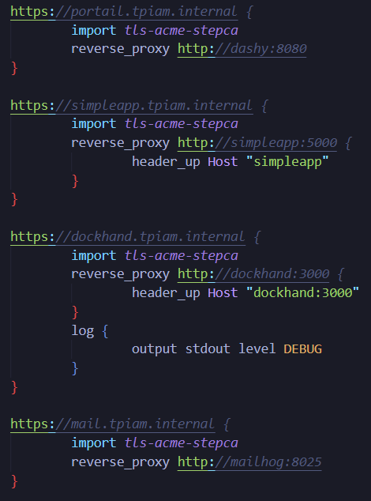
docker compose -f compose\keycloak\compose.yml up -d
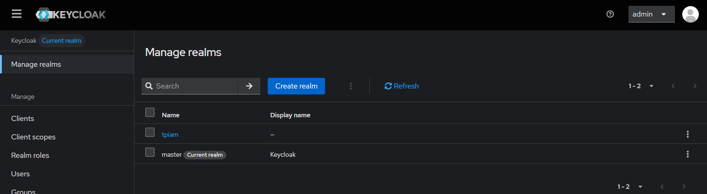
Host : mailhog | Port : 1025 | SSL/Auth : désactivés
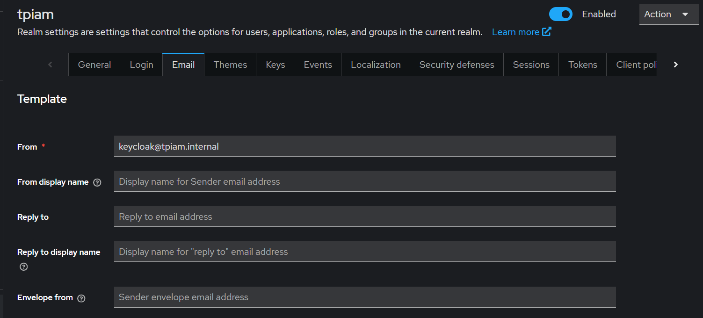
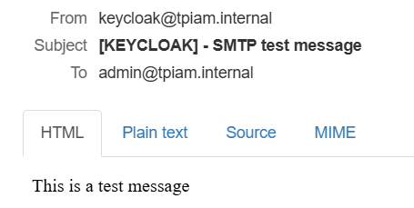
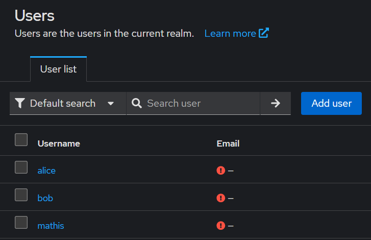
Définit l'identité du SP, l'IdP cible et les certificats de signature :
<?php
$config = [
'admin' => ['core:AdminPassword'],
'default-sp' => [
'saml:SP',
'entityID' => 'https://simplesaml.tpiam.internal',
'idp' => 'https://idp.tpiam.internal/realms/tpiam',
'privatekey' => 'saml.pem',
'certificate' => 'saml.crt',
],
];
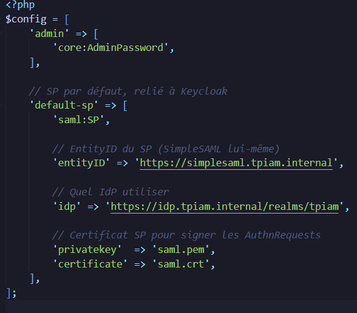
Décrit Keycloak côté SP (endpoints, binding HTTP-Redirect, certificat IdP) :
<?php
$metadata['https://idp.tpiam.internal/realms/tpiam'] = [
'sign.authnrequest' => true,
'SingleSignOnService' => 'https://idp.tpiam.internal/realms/tpiam/protocol/saml',
'SingleSignOnService.binding' => 'urn:oasis:names:tc:SAML:2.0:bindings:HTTP-Redirect',
'certData' => '/* certificat Keycloak extrait du SAML descriptor */',
];
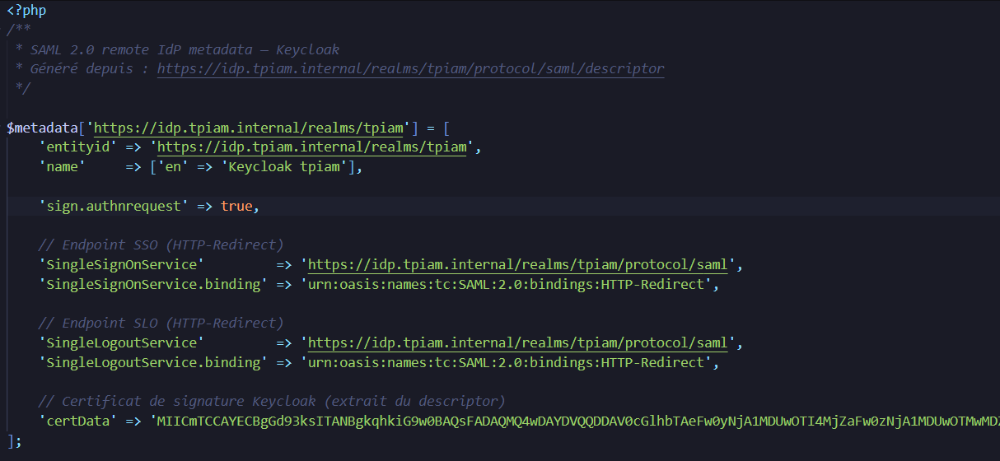
Depuis Keycloak (onglet Keys du client SAML → Generate new keys), on génère une
paire de clés et on télécharge le keystore.jks. On extrait ensuite la clé privée et le certificat au
format PEM pour les placer dans compose/simplesaml/certs/ :
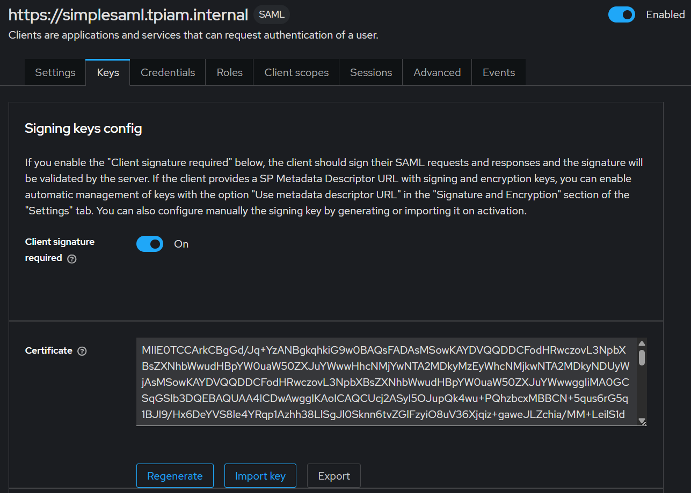
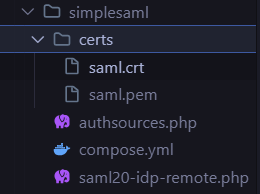
Les deux fichiers (saml.pem et saml.crt) sont référencés dans
authsources.php et montés dans le conteneur SimpleSAML via le volume ./certs. On relance
le conteneur :
docker compose -f compose\simplesaml\compose.yml up -d --force-recreate
On a bien la redirection vers keycloak qui nous demande de nous identifier.
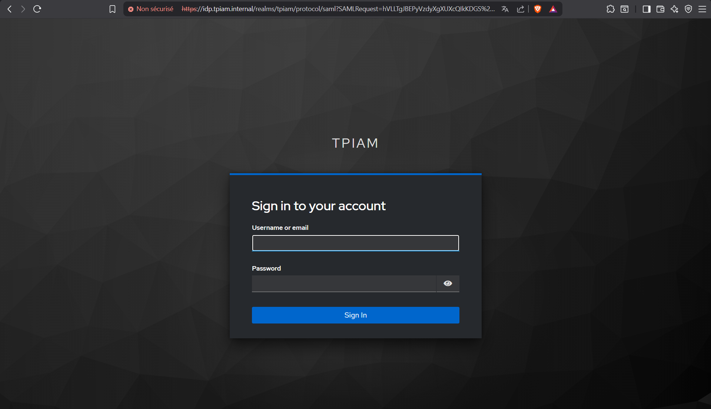